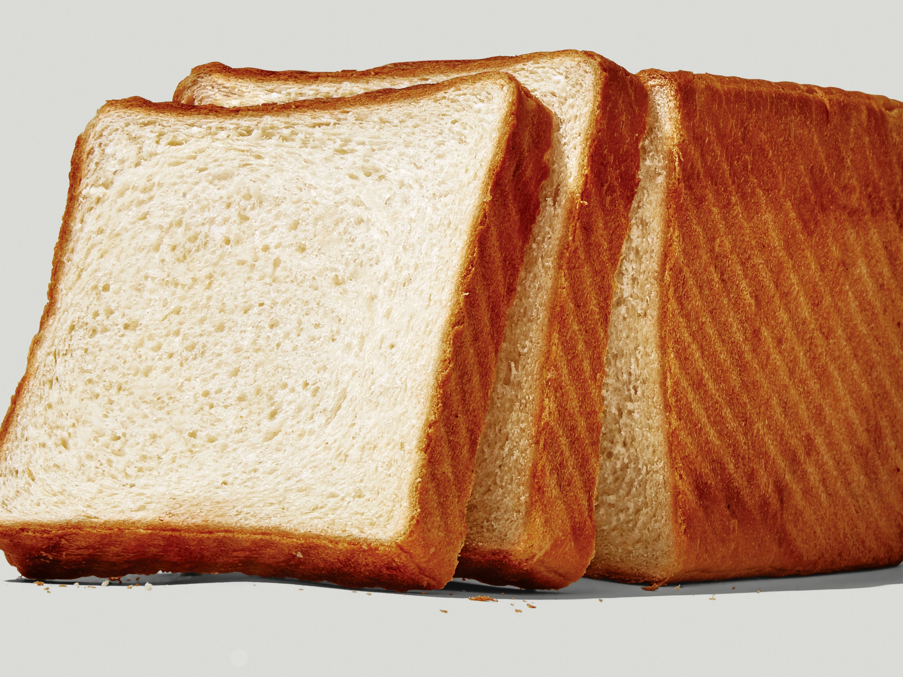
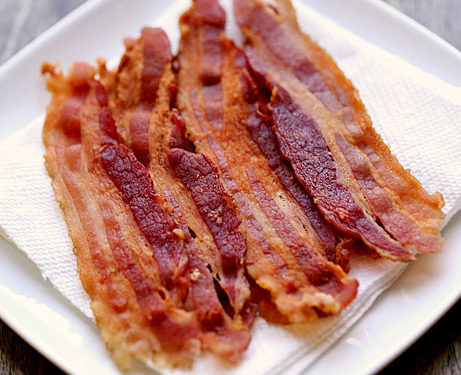

Grilled Cheese Sandwich Recipe
Ingredients
- White Bread - 8 slices

- American Cheese - 8 slices

- Butter (softened) - 1/4 cup

- Tomato - 8 slices

- Bacon - 8 slices

Instructions

- Place Bacon in a large, deep skillet.
- Cook over medium high heat until evenly brown. Drain and set aside.
- Heat a large skillet over medium heat.
- Spread butter onto one side of each slice of bread.
- Lay 4 slices of bread, butter side down, in the skillet. Top with a slice of cheese, 2 slices of tomato, bacon, and another slice of cheese.
- Cover with a slice of bread, butter side out. Fry sandwiches until golden on both sides.